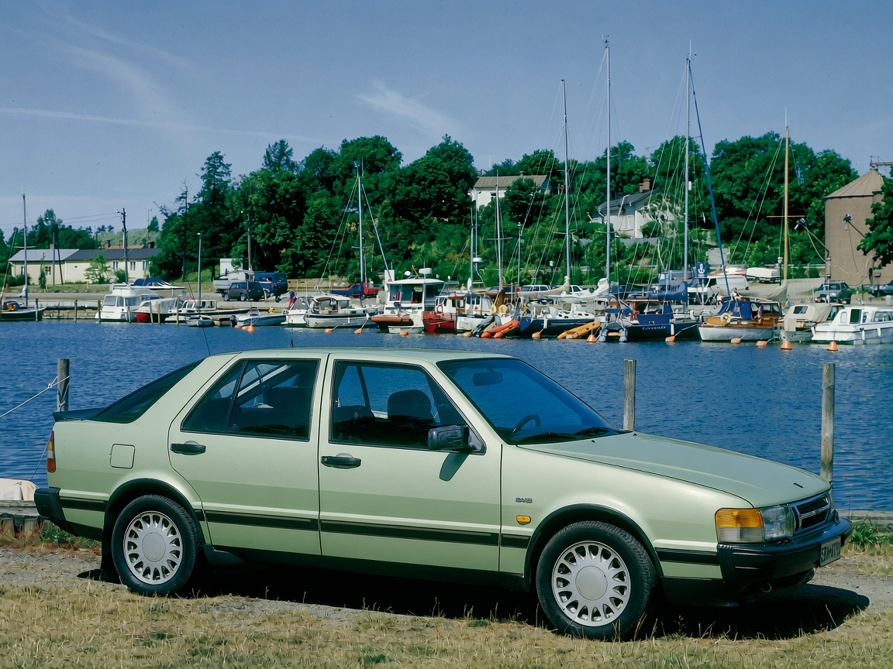

Saab 9000 CC JGC242
Magnus Hederstads gröna Saab 9000 CC från 1990, med modellens historik, B202I-specifikationer och planerna för bakrutetorkaren.
- Ägare
- Magnus Hederstad
- Modell
- Saab 9000 CC 2.0
- Årsmodell
- 1990
- Reg.nr
- JGC242
- Färg
- Grön
- Motor
- B202I, 128 hk
- Växellåda
- Manuell
- Kaross
- Femdörrars combi coupé
- Bakrutetorkare
- Saknas; hålet i rutan är pluggat från fabrik
Historik
Saab 9000 presenterades för pressen i Kolmården den 24 maj 1984 och började säljas som årsmodell 1985. Det var Saabs första stora bil i den övre mellanklassen, utvecklad på Type Four-plattformen tillsammans med Fiat Croma, Lancia Thema och Alfa Romeo 164. Formgivningen kom från Giorgetto Giugiaro och Saabs Björn Envall. Bilarna byggdes i Trollhättan och hos Valmet i Nystad i Finland.
Den ursprungliga karossen var en femdörrars halvkombi, senare kallad CC (combi coupé), med en rak och upprätt front. Sedanvarianten CD kom 1988 med sluttande front. Samma front fick CC först som årsmodell 1991, från hösten 1990 i Europa. En typisk årsmodell 1990 har därför fortfarande den ursprungliga raka fronten. CC ersattes av CS från årsmodell 1992.
Tillverkningen av 9000 upphörde den 6 maj 1998, då efterträdaren 9-5 redan hade lanserats. Totalt byggdes 503 087 bilar, varav 216 385 var CC (årsmodell 1985–1991).
Motorn B202I
| Uppgift | Värde |
|---|---|
| Motorkod | B202I |
| Typ | Sugmotor, radfyra, 16 ventiler, DOHC |
| Volym | 1 985 cm³ |
| Borrning × slag | 90 × 78 mm |
| Kompression | 10,1:1 |
| Effekt | 128 hk DIN (94 kW) vid 5 500 r/min |
| Vridmoment | 173 Nm vid 3 750 r/min |
| Insprutning | Bosch LH-Jetronic |
| Placering | Tvärställd, framhjulsdrift |
Siffrorna för effekt och vridmoment gäller den katalysatorförsedda sugmotorn från årsmodell 1989, enligt Wikipedia som stöder sig på Automobil Revue 1990. Tidigare årgångar angavs till 125 hk DIN med katalysator. 128 hk stämmer med uppgiften för JGC242. Borrning, slaglängd och kompression är standardvärden för B202.
Projekt och planer
Status den 26 november 2026.
- Fabrikspluggat hål i bakrutan konstaterat
- Kontrollera om kablaget redan sitter på plats
- Bekräfta att torkarmotor 9083676 passar CC
- Montera torkarmotor och blad
En plan som är på gång är att montera bakrutetorkare. Med tur sitter kablaget redan på plats. Magnus följer också Saab 9000 dagligen på Tradera, med tonvikt på hela bilar och ovanliga fynd, och gillar allt som har med Saab och Volvo att göra.